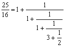

平方根連續分式
程式用作計算平方根(√x + y) / z的連續分式，其中x為非完全平方的正整數，y及z整數。利用這個程式亦可以計算平方根或分數的連續分式。與連續分式程式比較，這個程式雖然只能計算特定形式的連續分式，但改善了誤差的問題，若果輸入的數值不是很大，誤差是0，亦即是無論計幾多項(循環)亦不會出現誤差。
程式編寫日期: 2006年12月30日
程式(51步)
| 1 | X←→Y | 2. | Kin × 5 | 3. | Kin × 3 | 4. | cos-1 | 5. | sin |
| 6. | Kin + 3 | 7. | Kout 1 | 8. | + | 9. | Kout 2 | 10. | = |
| 11. | ÷ | 12. | Kout 3 | 13. | - | 14. | . | 15. | 5 |
| 16. | = | 17. | FIX 0 | 18. | RND | 19. | NORM | 20. | ENT |
| 21. | Kin 4 | 22. | × | 23. | Kout 3 | 24. | - | 25. | Kout 2 |
| 26. | = | 27. | Kin 2 | 28. | Kout 1 | 29. | x2 | 30. | - |
| 31. | Kout 2 | 32. | x2 | 33. | = | 34. | X←→K3 | 35. | Kin ÷ 3 |
| 36. | 1 | 37. | X←→Y | 38. | 1 | 39. | X←→K5 | 40. | x > 0 |
| 41. | ENT | 42. | Kin 2 | 43. | ENT | 44. | Kin 1 | 45. | Kin × 2 |
| 46. | x2 | 47. | Kin 3 | 48. | Kout 4 | 49. | √ | 50. | Kin × 1 |
| 51. | RTN | 52. | 53. | 54. | 55. |
LRN 模式輸入程式(供 fx-3600PV及fx-3800P使用，程式長度: 51步 )
| X←→Y | Kin × 5 | Kin × 3 | cos-1 | sin |
| Kin + 3 | Kout 1 | + | Kout 2 | = |
| ÷ | Kout 3 | - | . | 5 |
| = | FIX 0 | RND | NORM | ENT 2 |
| Kin 4 | × | Kout 3 | - | Kout 2 |
| = | Kin 2 | Kout 1 | x2 | - |
| Kout 2 | x2 | = | X←→K3 | Kin ÷ 3 |
| 1 | X←→Y | 1 | X←→K5 | x > 0 |
| ENT 2 | Kin 2 | ENT 3 | Kin 1 | Kin × 2 |
| x2 | Kin 3 | Kout 4 | √ | Kin × 1 |
| RTN | MODE . |
註: 連續分式的形式如下:
例題1: 計算以下算式的連續分式
按 P1 再按 2 RUN 1 RUN 2 RUN (顯示1)
RUN (顯示4) RUN (顯示1) RUN (顯示4) ....
所以答案為
例題2: 以連續分式表示 25/16 值。
按 P1 再按 0 RUN 25 RUN 16 RUN (顯示1) RUN (顯示1) RUN (顯示1)
RUN (顯示3) RUN (顯示2) RUN (顯示Math ERROR表示計算完結)
所以答案為

例題3: 以連續分式表示 √2 。
按 P1 再按 2 RUN 0 RUN 1 RUN (顯示1) RUN (顯示2) RUN (顯示2)
RUN (顯示2) ...........
所以答案為